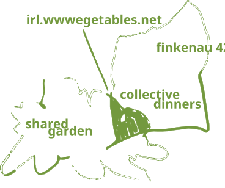

wwwelcome
wwwegetables are a student-organized project with a curious eye for plans and networks.
if you want to learn more about the space or project—swing by one of our collective dinners at finkenau 42.
loggg
-
06.05.2026the third dinner — cauliflower and rice, finished not so late, was cute and quiet.
-
02.05.2026did first garden work — took out old/rotten flowerbeds, plucked some plants for compost, planted some flowers on the sandy soil to see if it's any good.
collective dinners
the dinners happen on wednesdays and are open to students, staff, family, friends, and generally those, who could enjoy a lovely wwweggie-meal.
the gatherings happen under the atmosphere of sharing: food, time, tasks, thoughts. so, bringning over a snack or a drink is greatly encouraged.
you can refer to the schedule below to find out more about the previous and upcoming dinners.
schedule 2026
the starting time of the dinner may vary slightltly—sometimes we might get hold up in a class meeting or a seminar. for a ~real-time-update~ we suggest subscribing to our telegram-channel.
shared garden
the garden is located right next to the filmhaus of hfbk hamburg.
it is a great place to meet various new friends (with a plethora of insects, snails, birds), plant some wwweggies or flowers, ponder, photosynthesize, and so much more.
looking for
we find it important to give back to the garden for welcoming us. some of this love and care work requires tools and resource, that we are on look-out for. if you have any of the things mentioned below and would like to donate them — hellyeah (check the wording, lol).
- shovel
- rake
- hoe
- gardening gloves
- watering can
- garden hose
- pruning shears
- wheelbarrow
- hand trowel
- soil
- compost
- mulch
- seeds
- fertilizer
